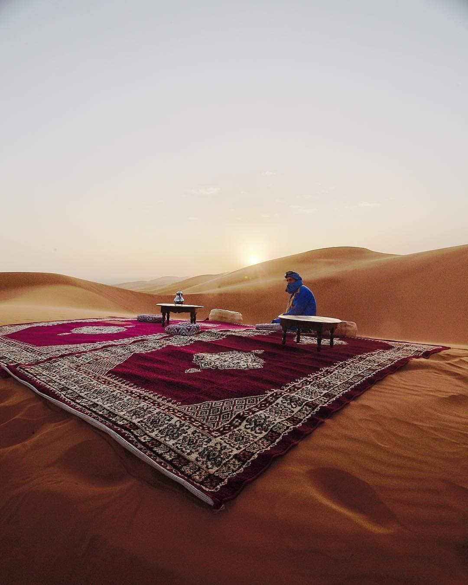

Depuis toujours Voyageurs du Monde est fidèle à cette évidence devenue aujourd’hui principe. « On ne parle bien que des pays que l’on connaît par cœur ». C’est pourquoi à Paris comme dans nos 14 agences de voyage régionales, chaque conseiller Maroc est un véritable spécialiste de cette destination. Pour certains, natifs du pays, pour d’autres, passionnés depuis toujours par le Maroc, tous sont à même, par leur parfaite connaissance du terrain, de vous conseiller, de vous guider et de vous faire découvrir toutes les richesses et particularités du Maroc.
PRESENTATION DE NOTRE AGENCE
DESERT
Le désert du Maroc, des étendues de sable aux palmeraies luxuriantes Votre campement chic dans les dunes de Chegaga, dormir dans un ancien ksar et au cœur d'une palmeraie Méharée à dos de dromadaire.
MEDINA
Un autre Sud marocain, de villages berbères en déserts de sable, à deux ou en famille Une jolie sélection d’adresses : maison d’hôtes confidentielle dans l’une des plus belles kasbahs, dar au charme traditionnel
PLAGE

Goûter à la quiétude de la côte atlantique, de médinas en ports de pêche : un autre Maroc Notre sélection de riads et d’hôtels de caractère, au cœur des médinas ou au fil de l’océan